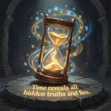
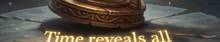
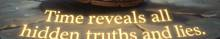
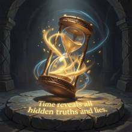
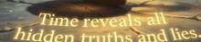

Text Generation — Please generate a painting: an ancient magic hourglass is being turned
Please generate a painting: an ancient magic hourglass is being turned upside down. Due to the passage of time, a line of English words appears on the stone platform below it: "Time reveals all hidden truths and lies."

Judge — Direct
- PASSText Generation — The image accurately renders the text "Time reveals all hidden truths and lies." on the stone platform. The text is complete and spelled correctly.
- PASSCompound - Imagination — The image depicts an hourglass with an old-fashioned wooden frame, giving it an ancient appearance. It is surrounded by glowing particles and swirls of light, which imparts a magical quality.
- PASSRelationship - Composition — The image shows a single, continuous line of English words inscribed on the front surface of the stone platform.
- FAILLogical Reasoning — The image shows an hourglass that is tilted, with sand flowing from the top bulb to the bottom. However, it is not shown actively 'being turned upside down' by an external force. Similarly, the English words are already fully formed on the stone platform; the image does not depict the action of them 'appearing' over time.
Judge — Continuum
- PASSText Generation — The image correctly generates the English sentence "Time reveals all hidden truths and lies." on the stone platform. The text is clear, legible, and matches the prompt exactly without any spelling errors or omissions.
- PASSCompound - Imagination — The image depicts an hourglass with an ornate, old-fashioned design, consistent with "ancient." It is surrounded by glowing swirls of blue light and magically levitating sand particles, successfully conveying the "magic" aspect.
- PASSRelationship - Composition — The image displays a sequence of English words arranged on the stone platform, forming the sentence "Time reveals all hidden truths and lies.". This fulfills the requirement of "a line of English words".
- PASSLogical Reasoning — The image shows an hourglass in the process of being turned, which represents the "passage of time." Below it, a line of words is present, glowing in a similar manner to the magical sand from the hourglass. This visual linkage implies that the words have appeared as a magical consequence of the hourglass's action, thus fulfilling the logical reasoning of the prompt.
What the agent did
Thinking
The user is asking for a painting of an ancient magical hourglass being flipped upside-down, with a line of English text on a stone pedestal below it: "Time reveals all hidden truths and lies." This is a painting with rendered text, so I need to do the following: 1. Generate the image with the hourglass scene 2. Verify the rendered text via inspection (zoom into the text region) 3. Fix the text via editing if it's wrong First, let me generate the image. It should be a fantasy-style painting, an ancient magical hourglass, mid-flip, glowing, with a stone pedestal beneath it, and a glowing line of English text on the stone: "Time reveals all hidden truths and lies." The text is long — 5 words... let me count: "Time reveals all hidden truths and lies." That's 7 words. I need to be careful about rendering that text. Let me write a detailed prompt for generation. Use flux2-klein as per the benchmark policy. Prompt: "A fantasy oil painting of an ancient magical hourglass being flipped upside-down on a circular stone pedestal in a mystical chamber, golden sand flowing upward, glowing magical light, swirling energy, the hourglass mid-rotation with swirling sand, runes carved into its bronze frame, on the flat stone platform below it a glowing line of ancient English text is inscribed: "Time reveals all hidden truths and lies." in elegant golden glowing letters, dramatic lighting, mystical atmosphere, painterly style" The image size is fixed by the harness — I'll use the default 1024x1024. After that, inspect the text region, and if the text is wrong, fix it via editing. Rendering long English text is difficult, so it'll probably need multiple rounds of editing. Let me start the generation.
Step 1 — `generate_image`
{
"model": "flux2-klein",
"prompt": "A dramatic fantasy oil painting: an ancient magical hourglass with an ornate bronze and stone frame, being turned upside down mid-flip, golden luminous sand swirling and flowing upward inside the glass, glowing blue and gold magical energy spiraling around it, floating runes of light. The hourglass rests on a rough circular stone platform in a dark mystical chamber. On the flat stone platform below the hourglass, a single line of glowing golden English letters is inscribed, reading exactly: \"Time reveals all hidden truths and lies.\" \u2014 clear legible serif lettering, soft magical glow. Cinematic rim lighting, dust motes in the air, rich painterly brushstrokes, deep shadows, mystical atmosphere."
}Result img_0

Thinking
The image looks very good. Let me zoom into the text area and verify the text. The text reads "Time reveals all hidden truths and lies." — it looks correct at a glance, but I need to verify character by character with inspect_region. Let me crop the text area at the bottom.
Model
The first generation looks promising — let me zoom in on the inscribed text to verify the exact wording before deciding anything.
Step 2 — `inspect_region`
{
"image": "img_0",
"roi": [
150,
680,
880,
820
]
}Result img_1

Thinking
My crop only shows the top line, "Time reveals all". Let me crop the lower text region to see the second line, "hidden truths and lies."
Model
The first line reads correctly. Let me check the second line.
Step 3 — `inspect_region`
{
"image": "img_0",
"roi": [
150,
750,
880,
880
]
}Result img_2

Thinking
The text reads as follows: "Time reveals all hidden truths and lies." — I'll check the spelling of each word one by one: - "Time" — T-i-m-e ✓ - "reveals" — r-e-v-e-a-l-s ✓ - "all" — a-l-l ✓ - "hidden" — h-i-d-d-e-n ✓ - "truths" — t-r-u-t-h-s ✓ - "and" — a-n-d ✓ - "lies." — l-i-e-s. ✓ The text is exactly "Time reveals all hidden truths and lies." with correct capitalization and punctuation. Next, I'll check the overall composition against the prompt: - An ancient magical hourglass ✓ (ornate bronze frame, stone base, magical glow) - Being flipped upside down — the hourglass is upright, and the sand is flowing from top to bottom... hmm. The prompt says "being flipped upside down." In the image, the hourglass is upright and the sand is falling from the upper bulb to the lower bulb. "Being flipped upside down" implies motion — the hourglass should be in a rotating/tipping state. In this image it's sitting stationary on its base, not in the middle of being flipped. Hmm, is this a problem? The prompt is "An ancient magical hourglass is being flipped upside down." The current image shows an hourglass upright on a platform, not being flipped. The runes orbiting around it give it a magical feel. But "being flipped upside down" suggests the moment when the hourglass is being turned over, probably with the sand swirling around. How important is this? The main visual request is a painting of an ancient magical hourglass being flipped upside down, with text appearing on a stone platform below due to the passage of time. The current image has the hourglass, the magic, the text, and the stone platform. The "being flipped upside down" aspect is not clearly depicted — it's standing upright on its base. I could try editing it to look like it's mid-rotation, with the sand swirling. However, there's a risk: editing the orientation of the hourglass could potentially ruin the text or the overall composition. The text is currently perfect, which is the hardest part. Options: 1. Accept it as is — the image is a good painting, and one could argue that the swirling energy and runes convey magic. However, it doesn't clearly show "being flipped upside down." 2. Edit the hourglass so it's tilted/rotated and the sand is swirling. Risk: the text on the platform might be disturbed. Given the policy: "If the approach is correct but the details are off... call edit_image again." The core subject is being flipped upside down. Let me try one edit: tilt the hourglass slightly to one side, with the sand swirling chaotically, as if it's mid-flip. I'll use references to preserve the text and the overall appearance. No, wait — if the hourglass is mid-flip (tilted), sand shouldn't be falling neatly into the lower bulb. In a good painting, the hourglass should be tilted about 45–90 degrees, and the sand should be swirling and flowing. The edit model might be able to handle "tilt the hourglass slightly to one side, the golden sand swirling and flowing chaotically inside as it's being flipped." Risk assessment: edit_image might shift the text. I can pass img_0 as a reference and instruct it to preserve the text on the stone platform exactly as is. Let me try that. If the text gets broken, I can re-add/fix it, or revert to img_0. First, let me mark img_0 as the best (it's a good, submittable result with perfect text). Then I'll try the flip edit, and if it's better I'll mark it, otherwise I'll stick with img_0.
Model
The inscribed text is accurate: "Time reveals all hidden truths and lies." — every character has been confirmed. Mark this as a safe fallback, and after that, try to better express the "upside-down" motion. Because right now the hourglass is still placed upright on the pedestal.
Step 4 — `mark_best`
{
"image": "img_0",
"reason": "Ancient magical hourglass on stone platform with correct glowing inscription \"Time reveals all hidden truths and lies.\" verified letter-by-letter; strong painterly style."
}Thinking
Alright, let me try an edit: tilt the hourglass so it's in the middle of being flipped, with the sand swirling chaotically. To lock in the text and the overall look, I'll pass img_0 as a reference.
Step 5 — `edit_image`
{
"image": "img_0",
"references": [
"img_0"
],
"model": "flux2-klein",
"prompt": "Tilt the ornate hourglass about forty-five degrees to the side so it is mid-flip, being turned upside down, its base lifted off the stone platform. The golden sand inside should swirl and tumble chaotically through the air inside the tilted glass, with a few glowing grains falling out. Keep everything else exactly the same: preserve the stone platform, the glowing golden inscription on the stone platform, the circular runes of light, the chamber, lighting, and painterly style."
}Result img_3

Thinking
img_3: The hourglass is now tilted, with sand swirling inside it — a much better depiction of "being flipped upside down." The text is still there too: "Time reveals all hidden truths and lies." — need to zoom in and check character by character. The text appears intact, but let me verify with inspect_region.
Model
The tilted, mid-flip hourglass with swirling sand now conveys the motion much better, and the inscription appears intact. Let me verify the text at full resolution.
Step 6 — `inspect_region`
{
"image": "img_3",
"roi": [
170,
740,
830,
880
]
}Result img_4

Thinking
The text still reads "Time reveals all hidden truths and lies." — let me check word by word: - "Time" ✓ - "reveals" ✓ - "all" ✓ - "hidden" ✓ - "truths" ✓ - "and" ✓ - "lies." ✓ The text is perfect. The image currently shows the following: - An ancient magical hourglass (elaborate bronze frame) ✓ - Being flipped upside down (tilted at an angle, with sand swirling chaotically) ✓ - English sentence on the stone platform below ✓, accurate ✓ - Painting style, mystical atmosphere ✓ This is a better result than img_0. I'll mark img_3 as the best and stop — all the required elements are in place, and the text has been verified.
Model
The inscription remains exactly correct: "Time reveals all hidden truths and lies." — every word confirmed at full resolution. And the tilted hourglass with its chaotic, swirling sand now clearly depicts the act of flipping it upside down. This is the version I want to return.
Step 7 — `mark_best`
{
"image": "img_3",
"reason": "Hourglass now visibly mid-flip (tilted, sand swirling) as the prompt requires, ancient magical style preserved, and the stone platform inscription \"Time reveals all hidden truths and lies.\" verified correct letter-by-letter."
}Thinking
Completed. img_3 has been marked as the best, and it satisfies all the requirements: 1. Ancient magical hourglass ✓ 2. Being flipped upside down (in a tilted, mid-rotation state, with sand swirling around) ✓ 3. A line of English text on the stone platform below: "Time reveals all hidden truths and lies." ✓ (verified) 4. Painting style ✓ Time to stop and summarize.
Model
The painting is complete. Final result: - **Subject**: An ancient hourglass with an ornate bronze-and-carved frame, caught mid-flip and tilted on a circular stone platform, its base lifting off the stone as it turns. - **Magic**: Golden sand swirls and tumbles chaotically inside the tilted glass with glowing grains scattering, wrapped in a spiral of light and floating runes in a dark, mystical chamber — all rendered in a rich painterly style. - **Inscription**: A glowing golden line of English text inscribed on the stone platform below, reading exactly **"Time reveals all hidden truths and lies."** — verified letter-by-letter via a full-resolution crop (img_4). The best version (img_3) is marked and will be returned.